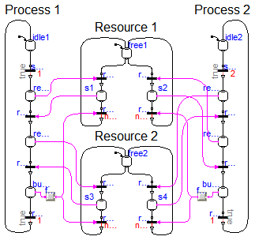

| Name | Description |
|---|---|
| Control system to fill and empty a two tank system | |
| Production line with simple robots | |
| Example with two processes sharing two resources ending up in a deadlock situation after 5 seconds |
 Modelica_StateGraph2.Examples.Applications.Deadlock
Modelica_StateGraph2.Examples.Applications.Deadlock
model Deadlock
"Example with two processes sharing two resources ending up in a deadlock situation after 5 seconds"
extends Modelica.Icons.Example;
Modelica_StateGraph2.Step free1(
nOut=2,
nIn=2,
initialStep=true);
Modelica_StateGraph2.Step s1( nOut=1, nIn=1,
use_activePort=true);
Modelica_StateGraph2.Transition request1( use_conditionPort=true,
waitTime=0.001,
loopCheck=true,
delayedTransition=false);
Modelica_StateGraph2.Step requesting1(
nIn=1,
nOut=1,
use_activePort=true);
Modelica_StateGraph2.Step requesting3(
nIn=1,
nOut=1,
use_activePort=true);
Modelica_StateGraph2.Step s2( nOut=1, nIn=1,
use_activePort=true);
Modelica_StateGraph2.Transition request2( use_conditionPort=true,
waitTime=0.001,
loopCheck=true,
delayedTransition=false);
Modelica_StateGraph2.Transition release2(
use_conditionPort=true,
delayedTransition=false,
loopCheck=false);
Modelica_StateGraph2.Transition release1(
use_conditionPort=true,
delayedTransition=false,
loopCheck=false);
Modelica_StateGraph2.Step free2(
nOut=2,
nIn=2,
initialStep=true);
Modelica_StateGraph2.Step s3( nOut=1, nIn=1,
use_activePort=true);
Modelica_StateGraph2.Transition reqest3( use_conditionPort=true,
use_firePort=false,
waitTime=0.001,
loopCheck=true,
delayedTransition=false);
Modelica_StateGraph2.Step s4( nOut=1, nIn=1,
use_activePort=true);
Modelica_StateGraph2.Transition request4( use_conditionPort=true,
use_firePort=false,
waitTime=0.001,
loopCheck=true,
delayedTransition=false);
Modelica_StateGraph2.Transition release4(
use_conditionPort=true,
delayedTransition=false,
loopCheck=false);
Modelica_StateGraph2.Transition release3(
use_conditionPort=true,
delayedTransition=false,
loopCheck=false);
Modelica_StateGraph2.Step busy1(
nIn=1,
nOut=1,
initialStep=false,
use_activePort=true);
Modelica_StateGraph2.Transition start1( delayedTransition=true, waitTime=
1);
Modelica_StateGraph2.Transition reserved1( use_conditionPort=true);
Modelica_StateGraph2.Transition reserved3( use_conditionPort=true);
Modelica_StateGraph2.Transition ready1(
delayedTransition=true,
use_firePort=false,
waitTime=1);
Modelica_StateGraph2.Step idle1(
nIn=1,
nOut=1,
initialStep=true);
Modelica_StateGraph2.Step requesting2(
nIn=1,
nOut=1,
use_activePort=true);
Modelica_StateGraph2.Step requesting4(
nIn=1,
nOut=1,
use_activePort=true);
Modelica_StateGraph2.Step busy2(
nIn=1,
nOut=1,
initialStep=false,
use_activePort=true);
Modelica_StateGraph2.Transition start2( delayedTransition=true,
waitTime=2);
Modelica_StateGraph2.Transition reserved2( use_conditionPort=true);
Modelica_StateGraph2.Transition reserved4( use_conditionPort=true);
Modelica_StateGraph2.Transition ready2(
delayedTransition=true,
use_firePort=false,
waitTime=1);
Modelica_StateGraph2.Step idle2(
nIn=1,
nOut=1,
initialStep=true);
Modelica.Blocks.Logical.FallingEdge fallingEdge;
Modelica.Blocks.Logical.FallingEdge fallingEdge1;
equation
connect(request1.inPort, free1.outPort[1]);
connect(request2.inPort, free1.outPort[2]);
connect(request2.outPort, s2.inPort[1]);
connect(request1.outPort, s1.inPort[1]);
connect(release1.inPort, s1.outPort[1]);
connect(release2.inPort, s2.outPort[1]);
connect(release1.outPort, free1.inPort[1]);
connect(release2.outPort, free1.inPort[2]);
connect(reqest3.inPort, free2.outPort[1]);
connect(request4.inPort, free2.outPort[2]);
connect(reqest3.outPort, s3.inPort[1]);
connect(release3.inPort, s3.outPort[1]);
connect(release3.outPort, free2.inPort[1]);
connect(release4.outPort, free2.inPort[2]);
connect(idle1.outPort[1], start1.inPort);
connect(start1.outPort, requesting1.inPort[1]);
connect(requesting1.outPort[1], reserved1.inPort);
connect(reserved1.outPort, requesting3.inPort[1]);
connect(requesting3.outPort[1], reserved3.inPort);
connect(reserved3.outPort, busy1.inPort[1]);
connect(busy1.outPort[1], ready1.inPort);
connect(ready1.outPort, idle1.inPort[1]);
connect(idle2.outPort[1], start2.inPort);
connect(start2.outPort, requesting2.inPort[1]);
connect(requesting2.outPort[1], reserved2.inPort);
connect(reserved2.outPort, requesting4.inPort[1]);
connect(requesting4.outPort[1], reserved4.inPort);
connect(reserved4.outPort, busy2.inPort[1]);
connect(busy2.outPort[1], ready2.inPort);
connect(ready2.outPort, idle2.inPort[1]);
connect(requesting1.activePort, request1.conditionPort);
connect(request4.outPort, s4.inPort[1]);
connect(s4.outPort[1], release4.inPort);
connect(requesting3.activePort, reqest3.conditionPort);
connect(s1.activePort, reserved1.conditionPort);
connect(s3.activePort, reserved3.conditionPort);
connect(fallingEdge.u, busy1.activePort);
connect(fallingEdge.y, release3.conditionPort);
connect(fallingEdge.y, release1.conditionPort);
connect(fallingEdge1.u, busy2.activePort);
connect(requesting2.activePort, request4.conditionPort);
connect(s4.activePort, reserved2.conditionPort);
connect(requesting4.activePort, request2.conditionPort);
connect(reserved4.conditionPort, s2.activePort);
connect(fallingEdge1.y, release2.conditionPort);
connect(fallingEdge1.y, release4.conditionPort);
end Deadlock;